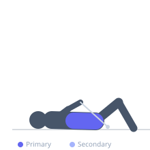

Exercise guide / Cable Crunch
Cable Crunch
The cable crunch is a weighted abdominal flexion exercise performed kneeling in front of a high cable pulley. The cable provides resistance throughout the full range of motion and allows progressive overload on the rectus abdominis, making it one of the most effective exercises for building abdominal strength and thickness.
Primary muscles
rectus abdominis
Secondary muscles
internal oblique
external oblique
Equipment
Cable Machine (High Pulley)


Starting position
- Kneel in front of a high cable pulley with a rope attachment held at the sides of the head. Hips should start in a relatively upright position.
Setup
- Set the pulley high. Grip the rope and hold it at the sides of the head — not at the neck. Kneel far enough back that the cable angle is comfortable.
Steps
- Curl the torso downward and forward by flexing the spine, pulling the ribcage toward the pelvis.
- Crunch down until maximum abdominal contraction is achieved.
- Slowly return to the starting position, maintaining tension on the cable.
Coaching cues
- Think about curling your sternum toward your bellybutton
- The movement is a spine curl — not a hip hinge
Breathing
- Exhale forcefully as you crunch down. Inhale on the return.
Range of motion
- Full spinal flexion at the bottom — the head comes toward the floor. Return to a tall kneeling position.
Tempo
- 2-1-2-0
Common mistakes
- Pulling with the arms instead of flexing the spine
- Not focusing on spinal flexion — the hip hinge is not the goal
- Standing up too much between reps, losing the working position
Safety
- Ensure the cable attachment is secure before kneeling
Training
- hypertrophy: 12–20 reps
- hypertrophy: 3–4 sets
- Rest: {'hypertrophy': 75}